The journey toward
Clinical Characterization
Patrick Ryan, PhD
Janssen Research and Development
Columbia University Medical Center
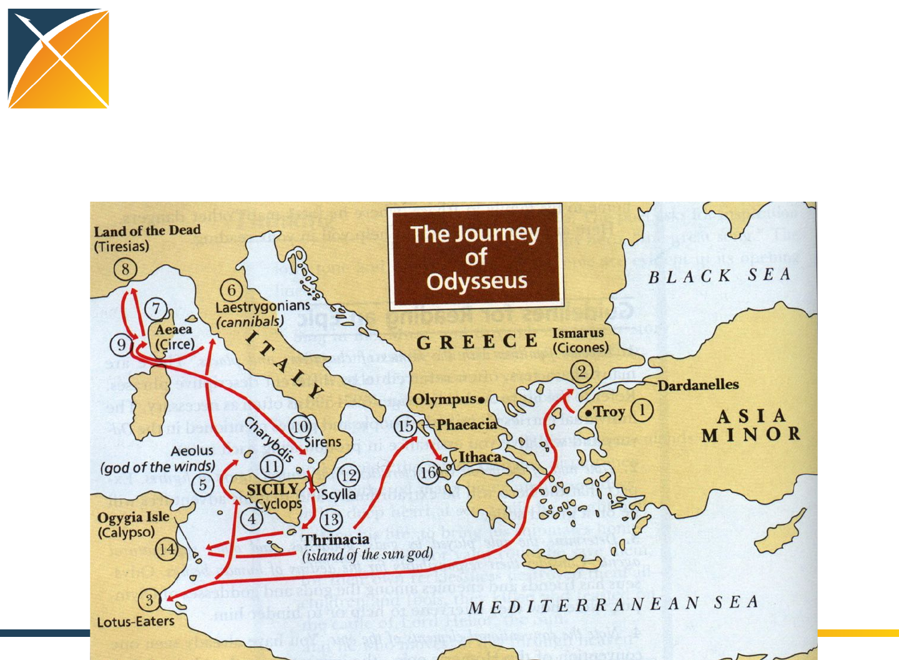
Odyssey (noun): \oh-d-si\
1. A long journey full of adventures
2. A series of experiences that give
knowledge or understanding to
someone
http://www.merriam-webster.com/dictionary/odyssey
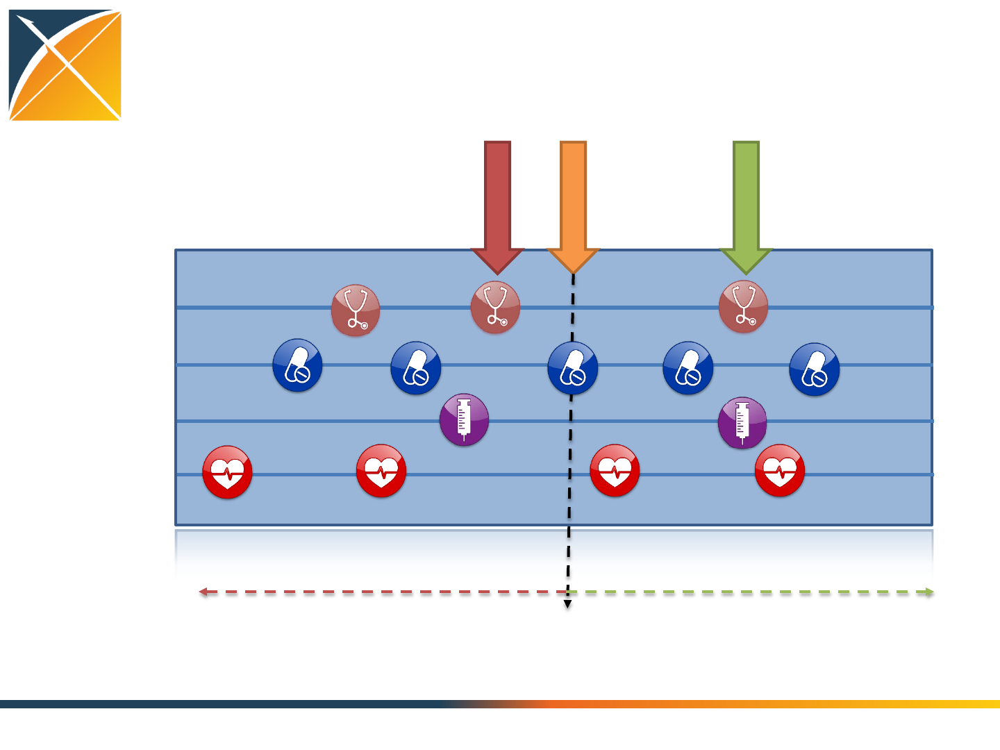
A caricature of the patient journey
Conditions
Drugs
Procedures
Measurements
Person time
Disease
Treatment
Outcome
0
Baseline time Follow-up time
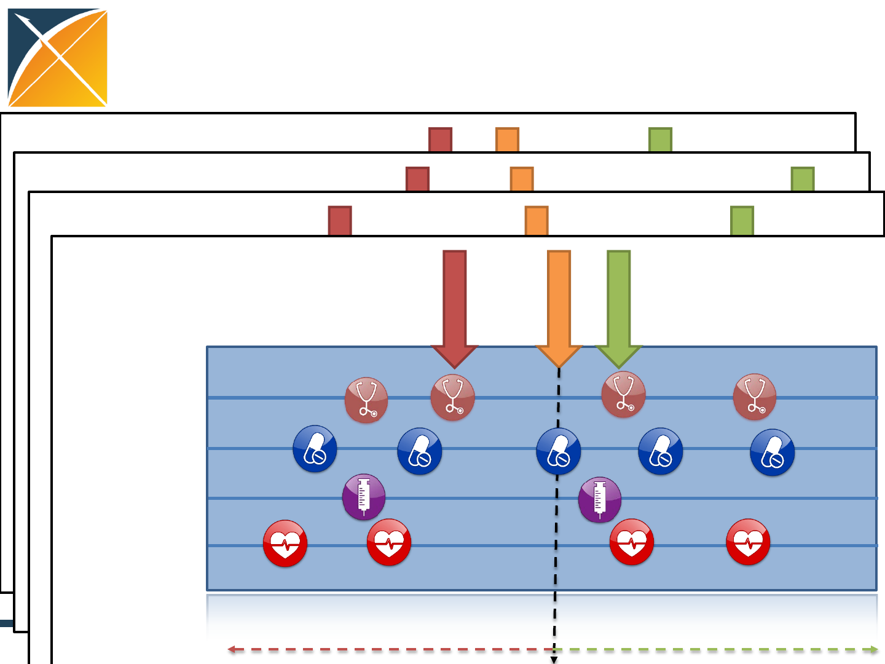
Each observational database is just an
(incomplete) compilation of patient journeys
Person 1
Conditions
Drugs
Procedures
Measurements
Person time
Disease
Treatment
Outcome
0
Baseline time Follow-up time
Person 2
Conditions
Drugs
Procedures
Measurements
Person time
Disease
Treatment
Outcome
0
Baseline time Follow-up time
Person 3
Conditions
Drugs
Procedures
Measurements
Person time
Disease
Treatment
Outcome
0
Baseline time Follow-up time
Person N
Conditions
Drugs
Procedures
Measurements
Person time
Disease
Treatment
Outcome
Baseline time Follo p time
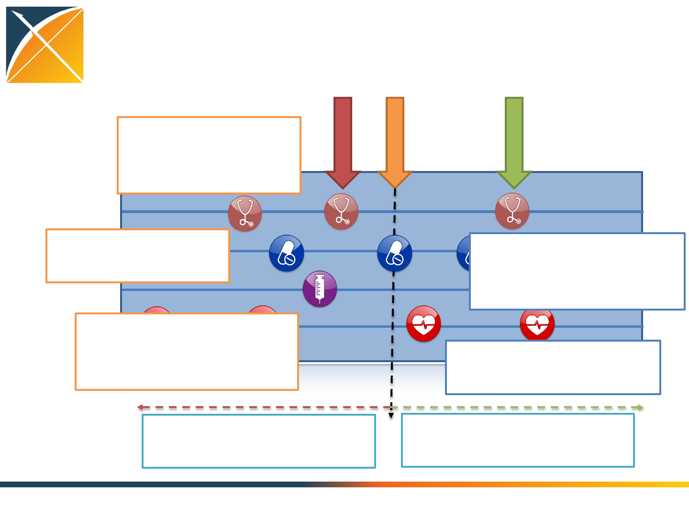
Questions asked across the patient journey
Conditions
Drugs
Procedures
Measurements
Person time
Disease
Treatment
Outcome
0
Baseline time Follow-up time
Which treatment did
patients choose after
diagnosis?
Which patients chose
which treatments?
How many patients
experienced the outcome
after treatment?
What is the probability I will
experience the outcome?
Does treatment cause
outcome?
Does one treatment
cause the outcome more
than an alternative?
What is the probability I will
develop the disease?

Classifying questions across the patient
journey
•Clinical characterization: What happened to them?
–What treatment did they choose after diagnosis?
–Which patients chose which treatments?
–How many patients experienced the outcome after treatment?
•Patient-level prediction: What will happen to me?
–What is the probability that I will develop the disease?
–What is the probability that I will experience the outcome?
•Population-level effect estimation: What are the causal effects?
–Does treatment cause outcome?
–Does one treatment cause the outcome more than an alternative?
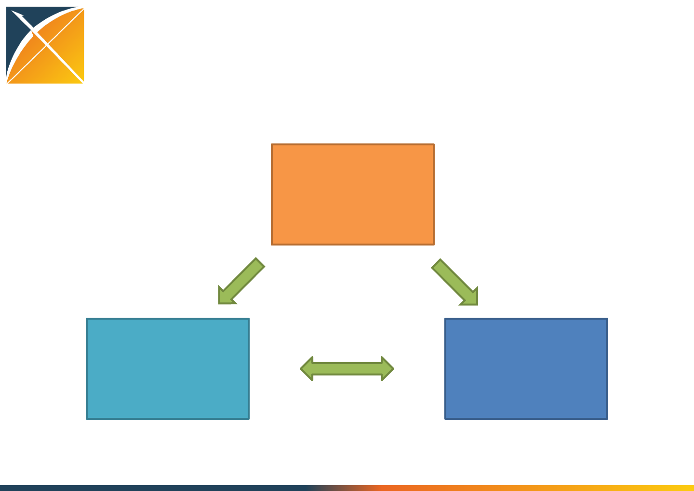
Complementary evidence to inform the
patient journey
Clinical
characterization:
What happened to
them?
Patient-level
prediction:
What will happen
to me?
Population-level
effect estimation:
What are the
causal effects?
inference causal inference
observation
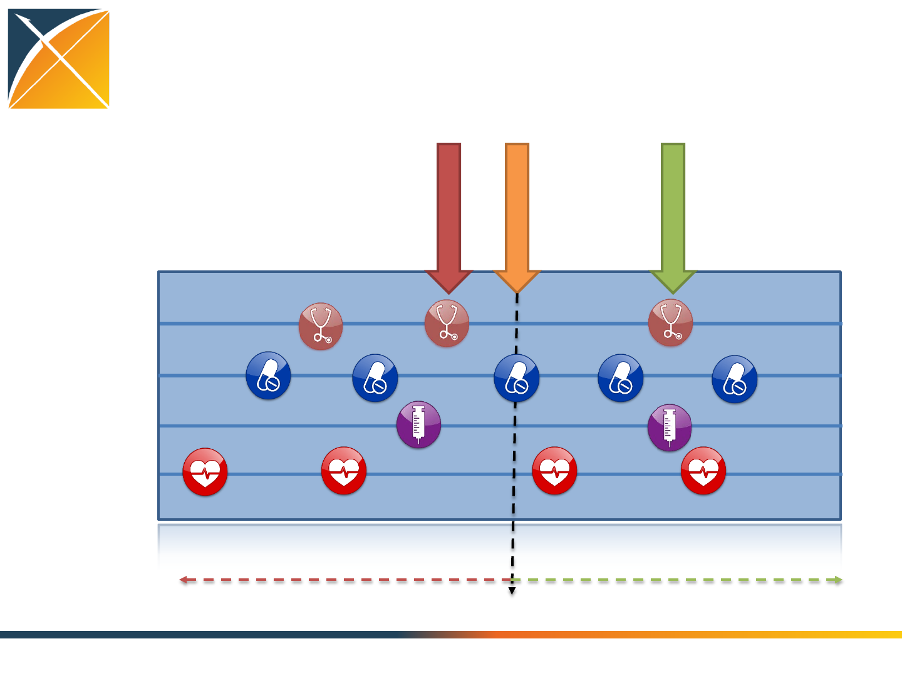
A caricature of the journey of a patient
with major depressive disorder
Conditions
Drugs
Procedures
Measurements
Person time
Depression
SSRI
Stroke
0
Baseline time Follow-up time
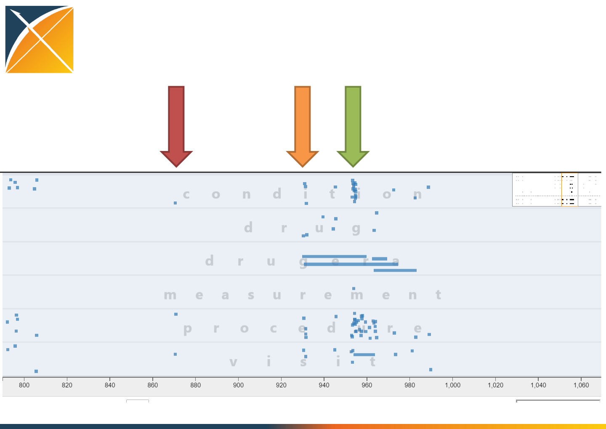
In practice, a patient’s journey is a bit more
complicated…
Depression
SSRI
Stroke
*See CHRONOS poster by Sigfried Gold!
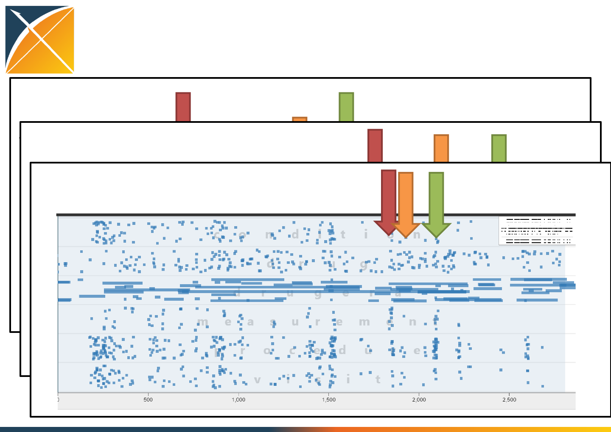
…and every patient’s journey is quite
different
Person 1
Depression
SSRI
Stroke
Person 2
Depression
SSRI
Stroke
Person 3
Depression
SSRI
Stroke

Clinical questions that deserve reliable
evidence to inform patients with depression
•Clinical characterization: What happened to them?
–What antidepressant did they choose after their MDD diagnosis?
–Which patients chose which antidepressant treatments?
–How many patients had ischemic stroke after antidepressant exposure?
•Patient-level prediction: What will happen to me?
–What is the probability that I will develop major depressive disorder?
–What is the probability that I will experience an ischemic stroke?
•Population-level effect estimation: What are the causal effects?
–Do SSRIs cause ischemic stroke?
–Does sertraline cause ischemic stroke more than duloxetine?
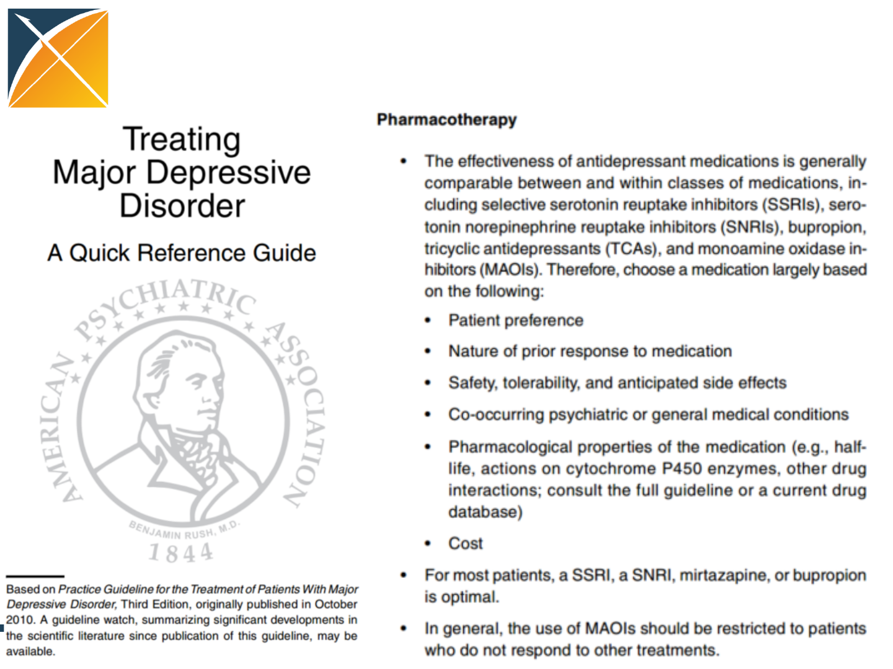
How should patients with major
depressive disorder be treated?
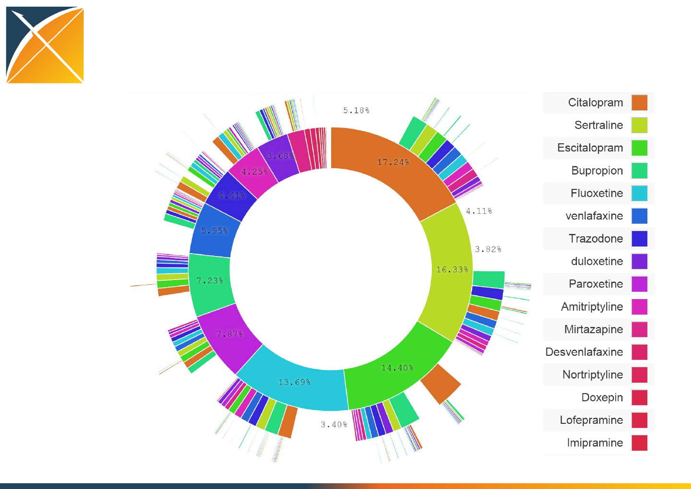
How are patients with major
depressive disorder ACTUALLY treated?
Hripcsak et al, PNAS, 2016
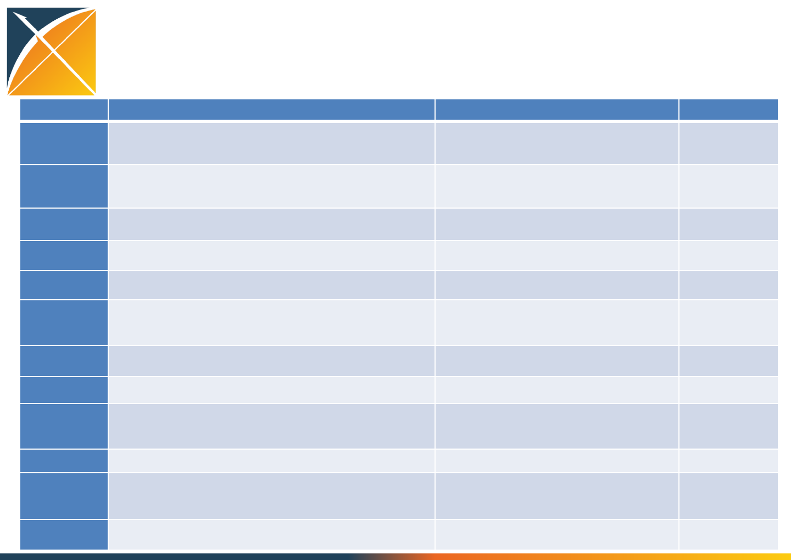
OHDSI participating data partners
Code
Name
Description
Size (M)
AUSOM
Ajou University School of Medicine
South
Korea; inpatient hospital
EHR
2
CCAE
MarketScan Commercial Claims and
Encounters
US private
-payer claims
119
CPRD
UK Clinical Practice Research Datalink
UK;
EHR from general practice
11
CUMC
Columbia University Medical Center
US; inpatient EHR
4
GE
GE Centricity
US;
outpatient EHR
33
INPC
Regenstrief Institute, Indiana Network for
Patient Care
US;
integrated health exchange
15
JMDC
Japan Medical Data Center
Japan; private
-payer claims
3
MDCD
MarketScan Medicaid Multi-State
US; public
-payer claims
17
MDCR
MarketScan Medicare Supplemental and
Coordination of Benefits
US; private
and public-payer
claims
9
OPTUM
Optum ClinFormatics
US; private
-payer claims
40
STRIDE
Stanford Translational Research Integrated
Database Environment
US; inpatient
EHR
2
HKU
Hong Kong University
Hong Kong; EHR
1
Hripcsak et al, PNAS, 2016
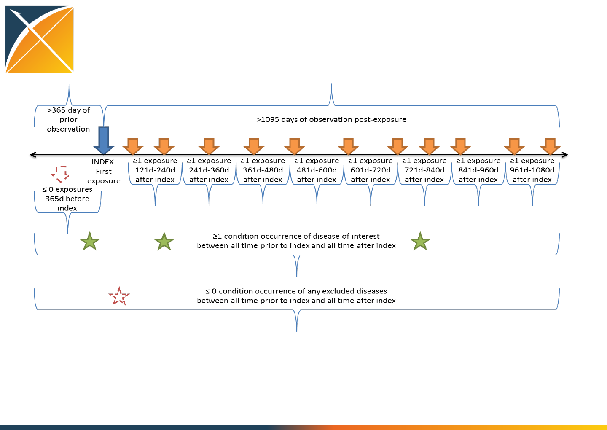
Treatment pathway study design
Hripcsak et al, PNAS, 2016
•>250,000,000 patient records used across OHDSI network
•>=4 years continuous observation
•>=3 years continuous treatment from first treatment
•N=264,841 qualifying patients with depression
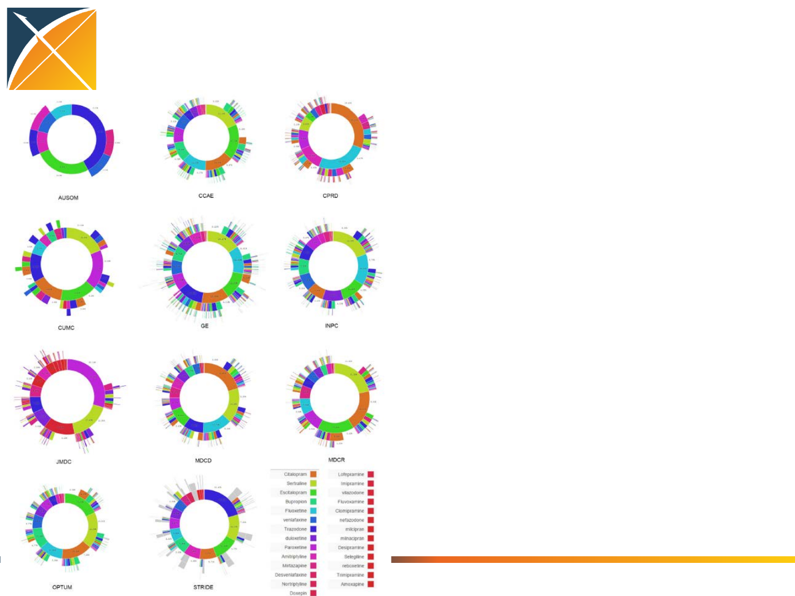
How are patients with major
depressive disorder ACTUALLY treated?
•Substantial variation in
treatment practice across
data sources, health systems,
geographies, and over time
•Consistent heterogeneity in
treatment choice as no
source showed one preferred
first-line treatment
•11% of depressed patients
followed a treatment
pathway that was shared
with no one else in any of the
databases
Hripcsak et al, PNAS, 2016
*See TxPath demo by Jon Duke!
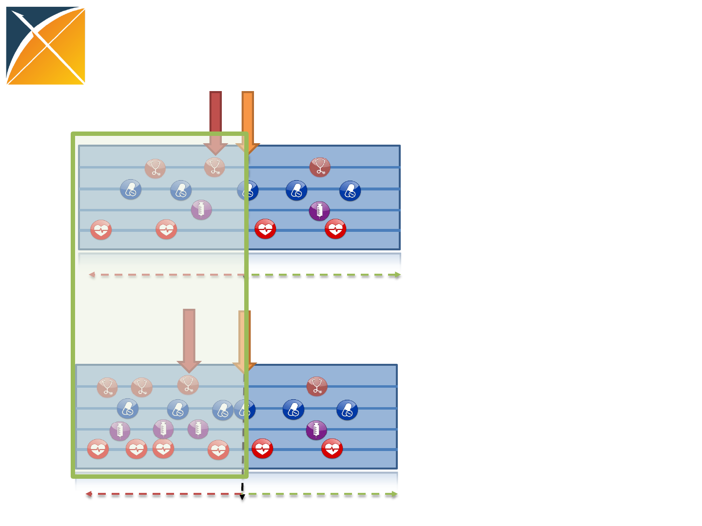
Which patients chose which
antidepressant treatments?
•Create cohorts for
all antidepressant
treatments
•Summarize all
baseline
characteristics
•Systematically
explore differences
in populations
Conditions
Drugs
Procedures
Measurements
Person time
Depression
sertraline
0
Baseline time Follow-up time
Conditions
Drugs
Procedures
Measurements
Person time
Depression
duloxetine
0
Baseline time Follow-up time
vs.
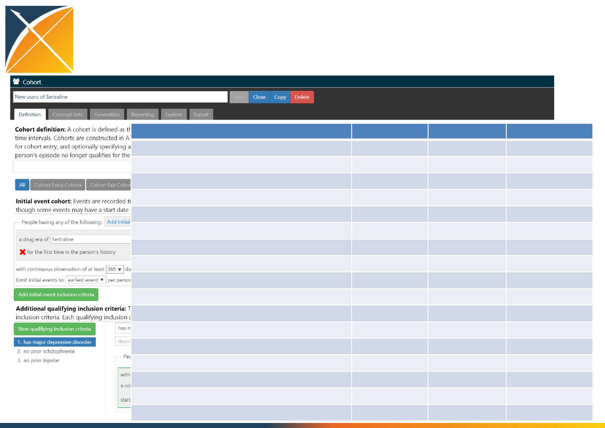
Standardized cohort construction*
*See ATLAS demo by Chris Knoll!
Cohort
CCAE
MDCD
MDCR
New users of Amitriptyline
53,433
11,689
5,242
New users of Bupropion
238,491
21,365
15,549
New users of Citalopram
141,864
31,083
17,533
New users of Desvenlafaxine
42,380
3,961
2,450
New users of Doxepin
22,172
3,908
2,505
New users of duloxetine
133,010
15,831
15,171
New users of Escitalopram
190,944
14,551
19,414
New users of Fluoxetine
146,626
22,283
8,620
New users of Mirtazapine
71,386
16,131
22,618
New users of Nortriptyline
29,322
3,425
3,925
New users of Paroxetine
18,940
534
2,419
New users of Sertraline
175,950
24,089
16,937
New users of Trazodone
189,520
33,228
18,263
New users of venlafaxine
123,494
12,648
11,998
New users of vilazodone
19,683
1,891
1,121
New users of Psychotherapy
587,631
63,059
39,839
New users of Electroconvulsive therapy
4,140
352
1,604
17 depression treatment cohorts
Large-scale clinical characterization
•Demographics: age, gender, race, ethnicity, index year
and month
•Conditions
–SNOMED verbatim concepts and all ancestral groupings
–365 days, 30d, 180d inpatient, all-time prior, overlapping
•Drugs
–RxNorm verbatim concepts and all ancestral groupings of
RxNorm ingredients and ATC classes
–365 days, 30d, all-time prior, overlapping
•Procedures, Measurements, Observations
•Concept density: # of visits, distinct drugs, conditions
•Risk scores, such as Charlson index
The same types of covariates you’d be using for your
Table 1 of your paper and for fitting propensity score and
outcome model…only bigger…

Large-scale baseline characterization
for depression
•17 treatments
•232,542 baseline characteristics
•4 databases (so far)
•17*232,542*4 = 15,812,856 summary
statistics
•Large-scale analysis is not ‘data mining’!
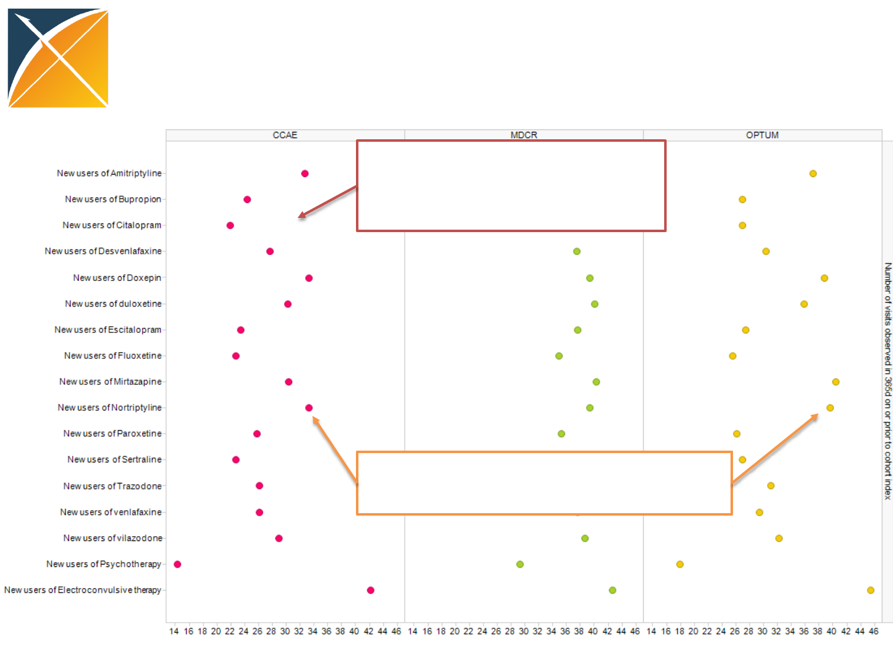
Baseline health service utilization by
depression treatment across databases
Mean number of visits in last 365 days
Substantial variation in prior
visits across depression
treatments within a data source
Large differences between databases,
inconsistent across treatments
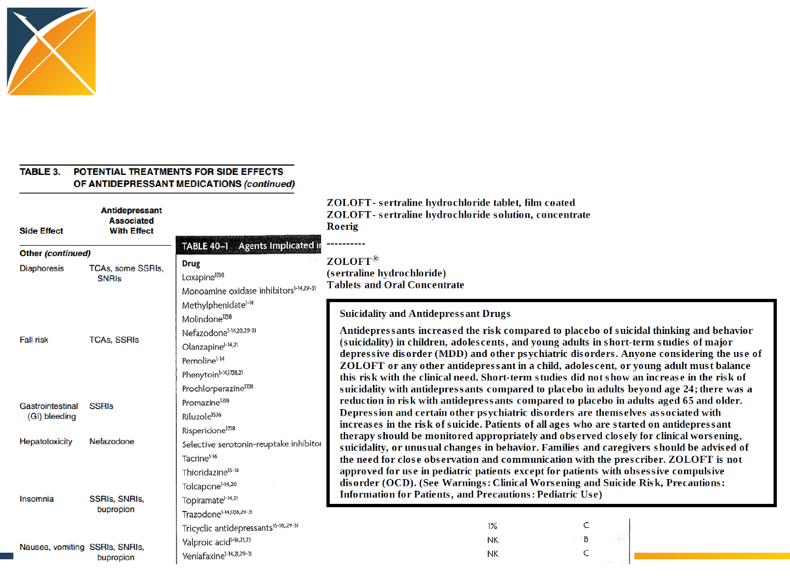
How can we find current evidence for
outcomes that patients with depression
might care about?
APA Treatment Guidelines
Published literature: Tisdale et al., Drug-induced diseases, 2005
FDA Product labeling, DailyMed
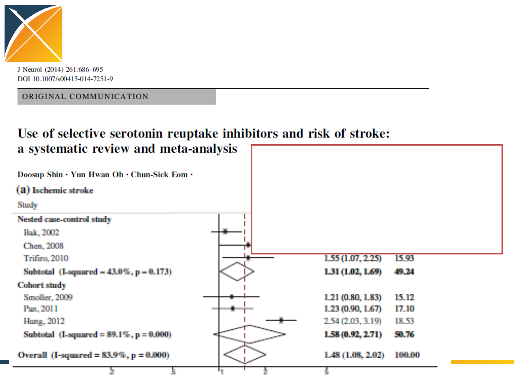
How does observational data currently
contribute to the evidence?
Conclusion by Shin et al.:
“Since there was heterogeneity among
studies and a possible confounding effect
from depression could not be fully
excluded, further well-designed studies
are needed to confirm this association.”
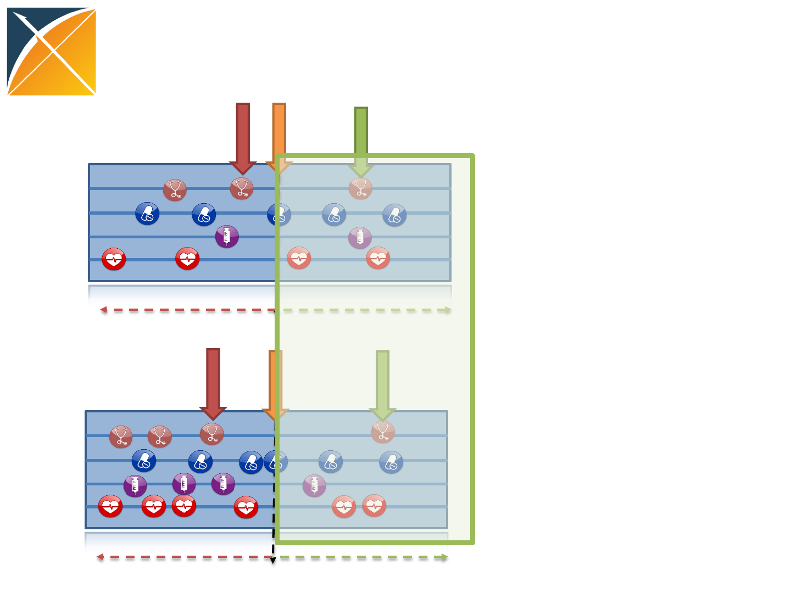
How many patients experienced the
outcome after treatment?
•Create cohorts for all
outcomes of interest
•Summarize incidence
of outcomes within
each treatment group
•Systematically explore
risk differences in
subpopulations of
interest
Conditions
Drugs
Procedures
Measurements
Person time
Depression
sertraline
0
Baseline time Follow-up time
Conditions
Drugs
Procedures
Measurements
Person time
Depression
duloxetine
0
Baseline time Follow-up time
vs.
Stroke
Stroke
*check out posters by Chandran, Cho
Standardized cohort construction
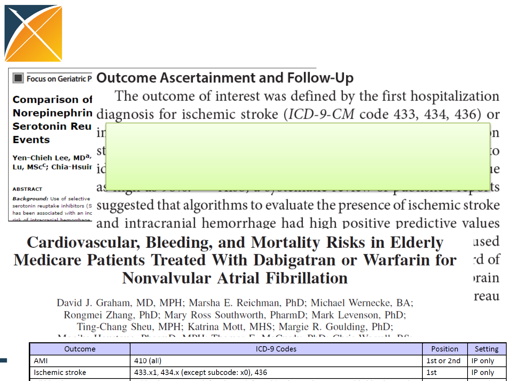
Standardizing the evaluation of cohort
definitions
We know these definitions are different, but we don’t
know tradeoff of sensitivity vs. specificity or the
impact in the validity of our analysis results.

Proposed strategies for evaluation
•Create standardized definition and explore large-
scale characterization of baseline characteristics
–See ATLAS demo by Chris Knoll
•Review patient profiles
–See CHRONOS poster by Sigfried Gold
•Compare alternative definitions in the literature
–Check out Vocabularies tutorial by Reich/Hripcsak/DeFalco
•Compare with probabilistic-based definition
–Check out Cohort definition tutorial by Duke/Shah/Knoll
MORE RESEARCH NEEDED….JOIN THE JOURNEY!
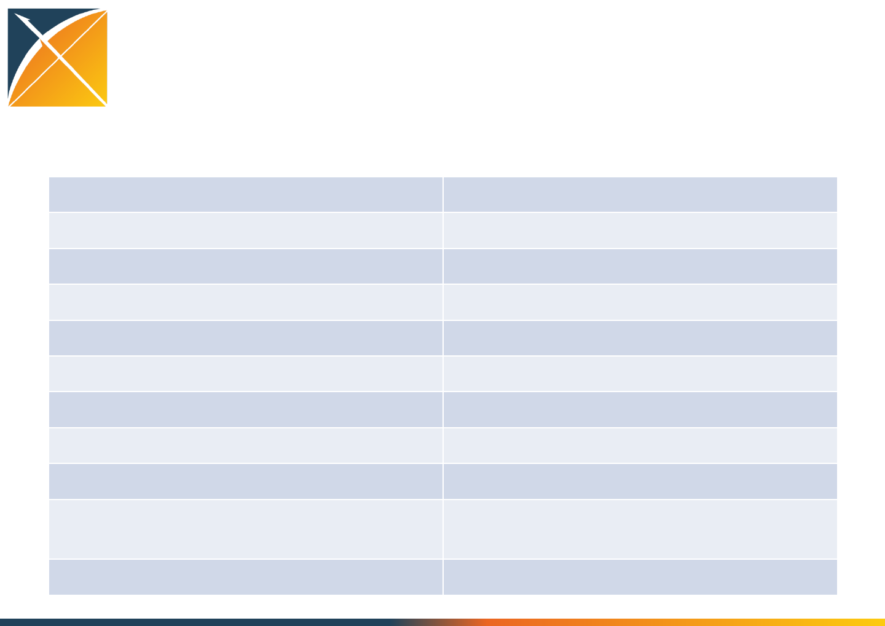
Develop standardize cohort definitions for
all outcomes of interest
Acute liver injury Hypotension
Acute myocardial infarction Hypothyroidism
Alopecia Insomnia
Constipation Nausea
Decreased libido Open-angle glaucoma
Delirium Seizure
Diarrhea Stroke
Fracture Suicide and suicidal ideation
Gastrointestinal hemhorrage Tinnitus
Hyperprolactinemia
Ventricular arrhythmia and sudden
cardiac death
Hyponatremia Vertigo
22 outcomes known to be associated with antidepressants:

Large-scale incidence characterization
for depression
•17 treatments
•22 outcomes
•6 stratification factors
•4 databases (so far)
•17*22*6*4 = 8,976 incidence rates
•Large-scale analysis is not ‘data mining’!
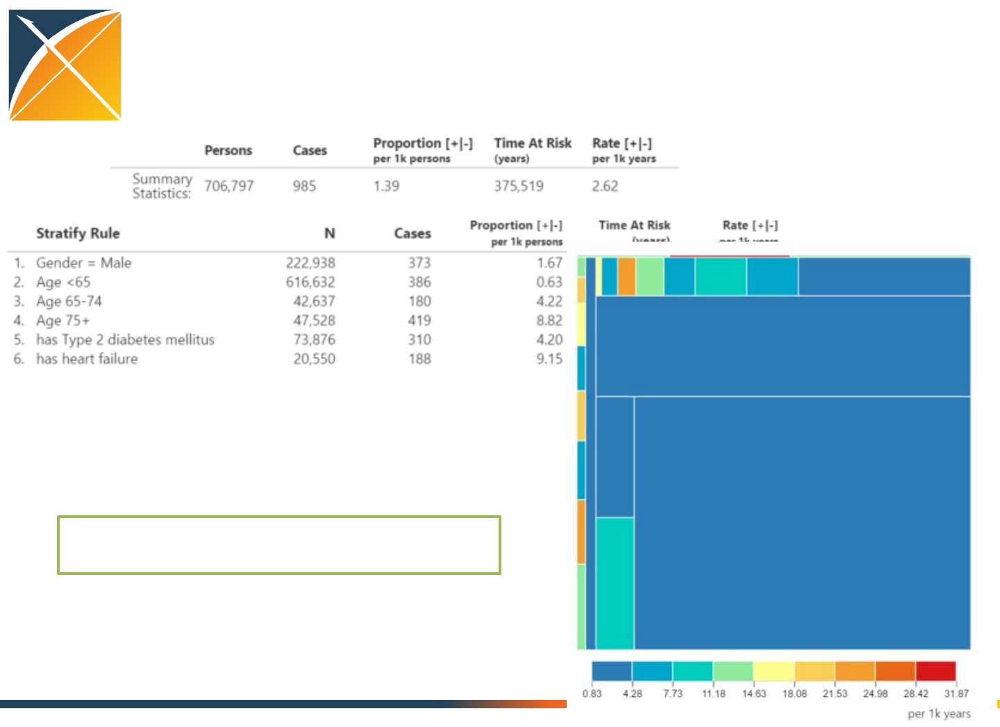
What is the incidence of ischemic stroke in
patients with SSRI?
Let’s see ATLAS in action!
Journey toward reliable evidence
Evidence
Generation
•How to produce
evidence from the
data?
Evidence
Evaluation
•How do we know
the evidence is
reliable?
Evidence
Dissemination
•How do we share
evidence to
inform decision
making?
Clinical characterization
Evidence
Generation
•Follow a standardized
process
•Open source code
•Use validated
software
•Analyses should be
scalable to many
exposures, many
outcomes
•Replicate across
databases
Evidence
Evaluation
•Apply tools to
explore patient
journeys and
population
characteristics to
assess validity of
cohort definitions
•Compare across
populations to study
heterogeneity
Evidence
Dissemination
•Characterization
requires an
exploratory
framework, not just
static reporting
•Characterization
results should be a
required supplement
to any patient-level
prediction and
population-level
estimation
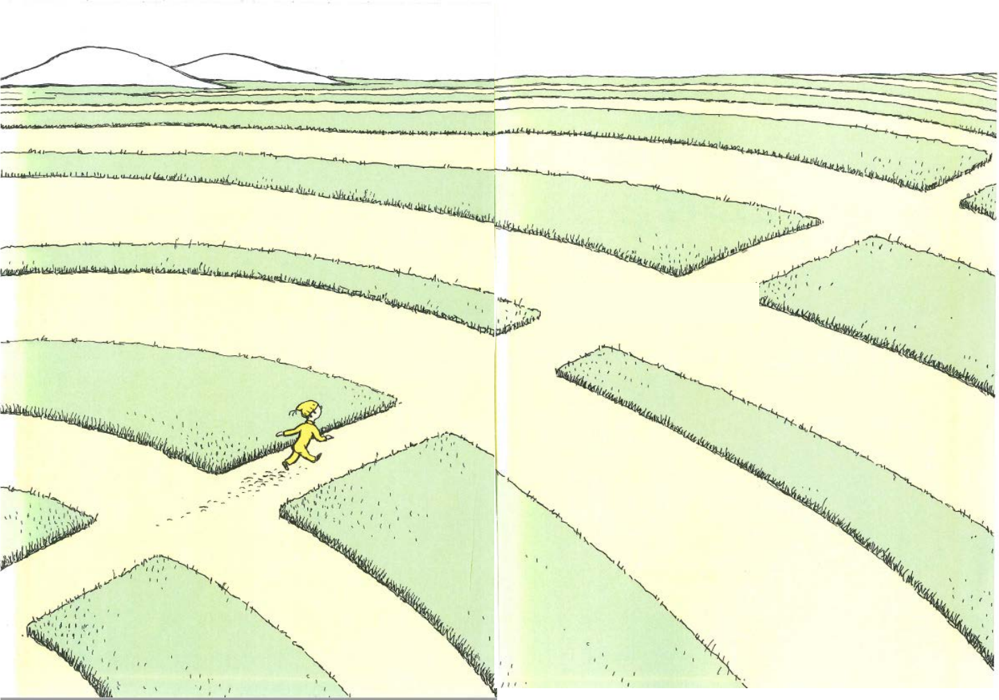
Join the journey